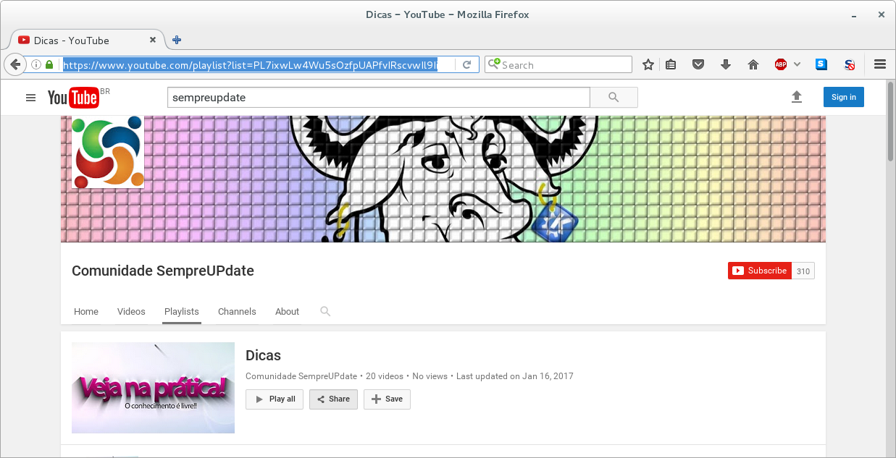

Esta vai ser uma dica bem rápida, mas muito útil de como baixar playlist do Youtube usando o youtube-dl. Para quem ainda não conhece o youtube-dl é um pequeno programa de linha de comando para baixar vídeos e áudio do YouTube e outros sites, o programa é escrito em python.
Caso você não tenha o programa instalado, use esse comando para instalar o Debian e derivados:
sudo apt install youtube-dl
Feito isso, vamos pegar o link da playlist do canal do YouTube do SempreUpdate como exemplo.

Com o link em mãos, use esse comando para baixar a playlist
youtude-dl -cit coloque-aqui-o-link-da-playlist
-cContinua do download da onde parou, caso você tenha cancelado ( Ctrl+C)
-iContinuar caso tenha algum erros de download, por exemplo, para ignorar vídeos indisponíveis em uma playlist
-tUsa o título do nome do vídeo
Legal, mas eu não quero baixar todos os vídeos só quero do vídeo 5 até o 9, então você usa esse comando:
youtube-dl --playlist-start 5 --playlist-end 9 link-da-playlist
--playlist-startVídeo da playlist que vai começar.
--playlist-endVídeo da playlist que vai parar.
Interessante, mas eu quero baixar apenas os vídeos 4, 6 e 15. Então, você tem que usar esse comando:
youtube-dl -cit --playlist-items 4,6,15 link-da-playlist
--playlist-itemsFaz o download de vídeos específicos de uma playlist. Para isso, você tem que especificar o índices dos vídeos na playlist separando-os por vírgulas.
Você pode também informar ao mesmo tempo os vídeos que gostaria de baixar na playlist e especificar o intervalo. Com esse comando:
youtube-dl -cit --playlist 4-7,8,10-13 link-da-playlist